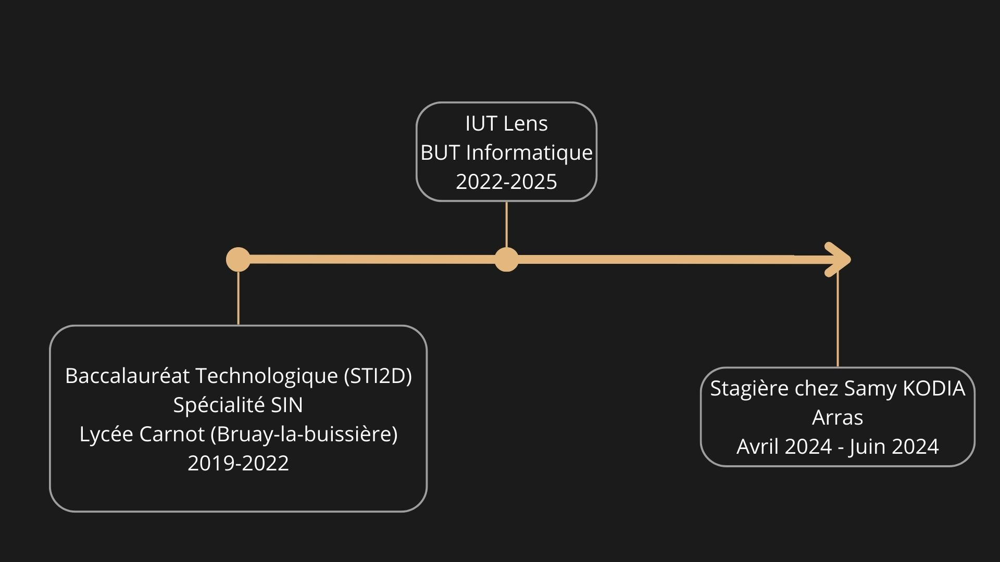

À propos


Je suis Dylan BALLET, j'ai 19 ans, étudiant à l'IUT de Lens en BUT Informatique.
Étant un ancien STI2D et donc sans aucunes connaissances dans le domaine de la programmation je décide de rejoindre l'IUT de Lens pour réaliser mon rêve, devenir développeur.
La première année j'ai beaucoup appris, et malgré les difficultés je me suis accrocher.
Au 3e semestre nous sommes initier au développement web et je décide de me spécialiser dedans car j'ai une aise que je n'ai pas dans les autres matières.

Mes loisirs
Pour ce qui est de mes loisirs dans mon temps libre après les cours, je retrouve mes amis pour soit se dépenser à la piscine, au tennis de table ou au badminton.
Je suis un grand fan de volleyball mais je n'ai plus la chance de pratiquer ce sport actuellement.
Je joue aussi aux jeux vidéos, surtout les jeux de survie, sandbox
Et pour finir je suis batteur dans deux groupes de musique et je suis un ancien saxophoniste.